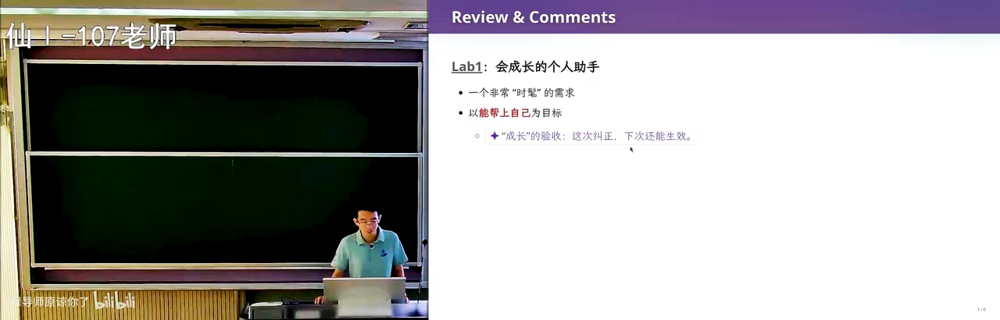
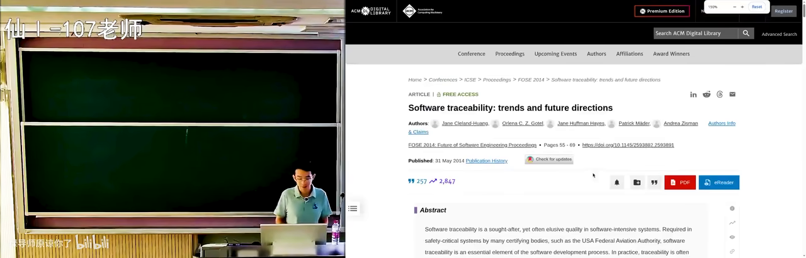
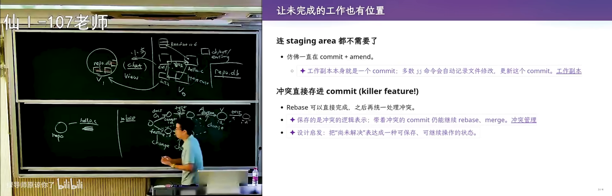
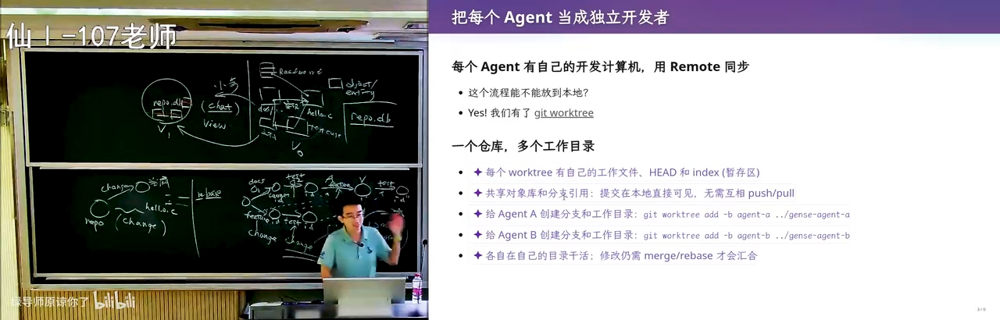
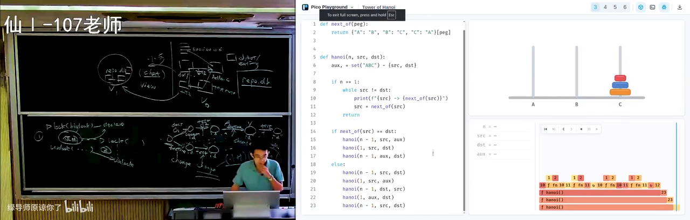
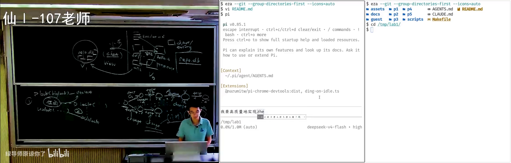
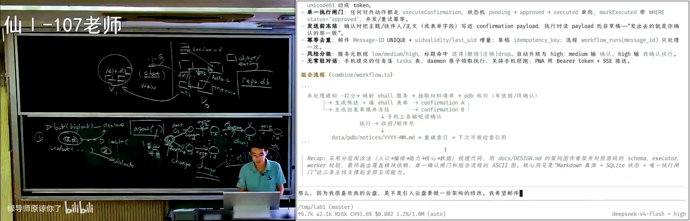

原视频：Bilibili · BV1Q6en6NEUo（时长约 98 分钟） 课程：南京大学《生成式软件工程》（2026）第 04 讲 · Raw 版 整理说明：由书架流水线根据视频字幕重构；口语已转为书面语；关键时间点标注 (参考时间)，截图可点击放大并跳转 B 站。
1. Lab1：会成长的个人助手
(参考时间: 00:00)
课程回顾了上周的软件项目管理内容，并发布了第一个选做实验（Lab1）——会成长的个人助手。
作业本身「不限实现方式」：想怎么做就怎么做，最好用 Vibe Coding 完成。课程会在课上留出时间，现场演示直接让 Agent 做一个，并指出其中的坑。
为什么要做这个实验
几乎所有任务都在 AI 的能力范围之内。但如果直接把实验要求丢给 AI，它一开始就会做出许多「看起来合理」的决定，而这些决定会让项目维护越来越困难，最终陷入软件工程里的焦油坑（项目越改越难维护、越投入越陷进去的泥潭）。
实验的真正目的，是让每位同学体验：
- 当 AI Slop（AI 量产的、看起来像模像样却空洞或错误百出的内容） 开始不断消耗 Token 时，你会下定决心删掉项目从头重做，或回退到很早期的版本；
- 下一个 Lab 会与本 Lab 强关联且有一定冲突——如果不认真做 Lab1，就没有完整的软件工程体验。

Lab1：会成长的个人助手需求在 B 站打开 (00:00:30)
参考需求形态
个人助手可以承载多种「个人数据库」：
- 专业课资料（计算机网络、概率论等）；
- 研究组论文与文献；
- 个人信息（填表场景：姓名、学号、身份证号、简历等）。
在此基础上，还可以：
- 与学校邮箱关联，实现 always-on 的后台 Agent Loop；
- 用一两百元的嵌入式小设备在宿舍持续运行；
- 手机端联动（网页 / iOS / Android）。
主讲人现场展示了自己用 Agent 处理填表的效率提升——过去需要研究生三年做的自动填表系统，如今几乎是一句话的事。
2. 项目、Intent（你最初「想做什么」，还没写成详细设计） 与可追踪性
(参考时间: 00:05:17)
2.1 项目是什么
项目是各种文件的集合：intent、设计文档、README、spec、code implementation。主讲人不喜欢 AI 生成的超长 README；对他而言，README 只应写清楚：
- 设计的初衷；
- 想做一个什么样的产品；
- 产品能达到什么效果（可附截图）；
- 最重要的设计取舍。
类比：你有一个能挣一个亿的点子，要说服别人加入创业团队，只需要一份较短的 README——intent。剩下架构、实现、扩展性，由有相应能力的人补完。
层次可以概括为：
Intent（我想做什么）
→ Spec（选型、结构、接口）
→ Code Implementation（实现）
2.2 文件系统是历史包袱
用文件系统管理项目，更多是历史原因：1950–60 年代操作系统只提供文件存储，关系型数据库尚未发明。程序员别无他法。
文件系统作为树状结构，丢失了大量不适合用树表达的关联。例如：
- 文档写「本项目用链表管理」；
- 代码后来改成树；
- 测试用例依赖旧行为。
文档、代码、测试之间形成关联，却没有被强行绑定。这正是技术债 technical debt（现在偷懒，以后要付更高代价去还的不一致）：随演进，不一致只会越来越多。
软件工程里对应的研究方向叫 Traceability（可追踪性：文档、代码、测试能否对上号）——在系统演进中维持测试、文档、代码之间的关联。

项目中的 Traceability 问题在 B 站打开 (00:09:50)
2.3 未来可能的仓库形态
如果未来几乎不再手写代码，软件可能不再是「一堆文件」，而是：
- 文档、实现、测试切成对象（object / entity）；
- 对象之间用关系连接（实现了、测试了、引用了）；
- 形成带环的图（graph），存进
repo.db。
人类无法用现有 Unix 工具维护这种仓库，但可以用魔法打败魔法：用强化学习反馈训练 AI 理解该图；每次小步修改（fix bug、改文档、加功能）时，AI 根据 chat 摘出相关的 view（视图），完成修改后再写回下一版本。
graph LR
A["用户 chat：改这一小步"] --> B["AI 从 repo.db 摘出相关 view"]
B --> C["可视化看板 / 相关 artifacts"]
C --> D["小步修改 V0 → V1"]
D --> E["写回一致的 repo.db"]
这里借用了数据库「视图」的概念：数据不变，用不同查询以另一种形式展示。
3. Git 深潜：Merge、Rebase（把提交搬家、接到新的基线上，常用来整理历史） 与 Change
(参考时间: 00:22:53)
3.1 Merge 的问题
Git 管理的是目录快照。开发者 A、B 可在两条线上独立提交，合并时用两路 merge：
- 产生有两个 parent 的 commit；
- 若 merge 由 A 完成，B 写的部分在冲突解决后 ownership 可能归到 A。
3.2 Rebase 的机制与风险
Rebase 试图把一侧的修改「搬到」另一侧之后，得到线性历史：
- 把 B 的 feature 尝试接到 A 的历史后面；
- 成功则继续搬 test；
- 任一步冲突都需 resolve，且会创建新的 commit id（base 变了）。
graph TD
A0["A: 文档"] --> A1["A: 测试"]
B0["B: feature"] --> B1["B: 测试"]
A1 --> R1["rebase: 搬 feature"]
R1 --> R2["rebase: 搬测试"]
R2 --> L["线性历史"]
麻烦在于：
- 进入 rebase 冲突模式时，人很容易懵；
- 每次 rebase 都生成新 id，历史被改写；
- 我们真正关心的是 change（修改），Git 却用 commit 代替 change，没有专门的 change 对象。
3.3 Stash 与人的单线程假设
经典场景：改到一半（编译不过、测试不过），导师突然打电话要修更高优先级 bug。Git 的解法是 git stash——把工作区压栈。
再被打断一次，stash 栈就变深。在「古法编程」时代这尚可接受，因为：
- 人是 single-threaded：只有一双手、一张嘴、一对眼睛；
- 读与写不能同时发生（类似 shared memory 的 load/store）；
- 人类提交以小时计，团队沟通以天/会为单位，冲突概率低。
4. Jujutsu / jj（新一代版本控制工具，把「一次修改 change」当成一等公民）：把 Change 变成一等公民
(参考时间: 00:28:40)
如果把 change 提升为 first-class citizen，就接近下一代版本控制工具——Jujutsu（jj）。
核心特点
- 与 Git 底层兼容，可当 Git 用；
- 增加 change 概念：rebase 时搬的是 change，冲突可以「带下来」再 resolve；
- 没有 staging area（提交前的暂存区：决定哪些改动进入下一次 commit）：你改一个字节，就像隐式做了一次 commit（并抹掉上一次未完成的提交）；
- 工作区永远处于「当前 change 已提交」的状态，不需要手动
git add。
Git: working tree → index → commit
jj: working copy ≡ 当前 change（自动提交）
学习建议
- 上一代人形成 SVN 肌肉记忆，本代人形成 Git 肌肉记忆；
- AI native 一代应先用更正确的设计建立肌肉记忆，再回头理解 Git 为何如此；
- 可以把「从 change 理解版本管理」这样的 prompt 交给 Agent 辅助学习。

Jujutsu：Change 作为一等公民在 B 站打开 (00:31:00)
5. 为 Agent 重新设计版本管理
(参考时间: 00:35:54)
这门课是生成式软件工程，真正要问的是：在 Agent 时代如何再次重新设计版本管理。
5.1 为人设计的模型跟不上 Agent
| 维度 | 人类 | Agent |
|---|---|---|
| 并发 | 单线程个体 | 可 10× / 100× 并行 |
| 提交粒度 | 10 分钟～小时 | 秒级原子提交 |
| 沟通 | 会、口头、文档 | prompt / 结构化消息 |
| 冲突处理 | 痛苦、易懵 | 可自动 resolve |
即便使用 Git worktree（同一个仓库开出多个工作目录，供不同人/Agent 并行改） 等 workaround，本质仍是「为人设计的模型」。
5.2 多 Agent 协作的两种拓扑
方式一：一人一机（严格类比人类）
- 每个 Agent 独立容器 / 虚拟机；
- 克隆同一 remote；
- 主 Agent 负责协调与 inject prompt。
方式二：Git worktree（更轻量）
- 同一仓库多个工作树；
.git在 worktree 里可只是一个文本文件，指向共享的 git dir；- 提交本地互相可见，无需反复 push；
- 冲突仍需 merge / rebase。
现场演示中，主讲人开了多个 tmux session 作为 coding agent，让它们并行工作；并让 Agent 把会话改到 worktree 上。

多 Agent 并行：tmux + worktree在 B 站打开 (00:47:00)
5.3 不再需要 blame
Git 为人设计的特性还包括 git blame（查看某一行是谁、哪次提交改的——用来「追责」）：出问题时回溯是谁的 commit。
Agent 时代：
- Agent 不能被「开除」或「坐牢」；
- 同一模型的克隆体做同一件事，大概率收敛到相同结果；
- 历史价值从「谁写错了」变成「怎么把它修好」；
- 项目可以大步向前，快照仍保留（方向走错时可回退），但几乎不必「看过去」。
6. 从第一性原理看并发控制
(参考时间: 00:55:36)
6.1 Git ≈ 乐观并发控制（先各改各的，冲突了再处理，假设一般不会撞车）
数据库里，事务（transaction）可先读、再算、再写；写时可能冲突或死锁，需 rollback。Git 的协作模型很像乐观并发控制（optimistic）：
- 假设事先开过会，各做各的大概率不冲突；
- merge / rebase 时再处理冲突。
教务系统选课是典型低冲突场景：每人读写自己的数据。
6.2 Agent 应更偏向悲观并发控制（先上锁再改，假定很可能冲突）
操作系统课的并发是锁：访问可能冲突的资源前先 lock，release 后别人才能 lock。
Agent 动作极快时，乐观模型会更频繁触发冲突。更好的设计可能是：
- 主 Agent 规划；
- 对项目 scope（如文件级）先上锁；
- 完成后 commit 并释放锁；
- 其他 Agent 若所需资源被锁，则等待。
即便悲观，只要 Agent 数量足够多、不冲突的 scope 足够多，整体吞吐仍可很高——与操作系统里「细粒度锁下多线程仍可高效」同理。
graph TD
P["主 Agent 规划任务"] --> L1["锁: 模块 A"]
P --> L2["锁: 模块 B"]
L1 --> W1["Agent1 工作"]
L2 --> W2["Agent2 工作"]
W1 --> C1["commit + 解锁"]
W2 --> C2["commit + 解锁"]
7. 团队管理才是真正的难点
(参考时间: 01:03:52)
版本控制本质是工具。真正困难的是进度与团队管理。
- 若 AI 能一句话直出微信级产品，软件工程就「死了」；斩杀线暂未到这一层；
- 人月神话指出：人与人沟通关系是平方级上升；
- 最难招的不是码农，而是能把国民级应用拆成多个 team、并让十个 team 拼起来仍是一个产品的 leader。
你现在就可以把自己当成主 Agent：如何分解任务给多个 Agent？何时提交？何时合并？——把版本控制概念带进自己的开发流程。
汉诺塔的隐喻
课上穿插了一个带方向限制的汉诺塔变体（只能单向移动），用来说明：看起来简单的约束会显著改变最优策略。更重要的是产品思维——如何把这个「小学生考级题」做成可售卖的产品：可编辑 playground + 付费 AI 助教。

单向汉诺塔可视化 Playground在 B 站打开 (01:11:40)
设计讨论中出现了一个反例：GPT 给出的「一个 API + 关系数据库 + 对象存储」是正常软件工程课答案，但主讲人不喜欢——因为本质需求是版本管理，用 Git 管理学生提交直到格式收敛，再迁移到数据库，往往更合理（Overleaf 导出为 git repo 同理）。
8. 现场翻车：Vibe Coding 从零做 Lab1
(参考时间: 01:18:17)
项目早期不应直接上 multi-agent。应先找能力最强的模型，多轮对话把 intent 对齐。
8.1 直接丢需求会发生什么
现场把 Lab1 需求直接丢给 Agent，观察其行为：
- 一线模型会进 plan mode，确认事实后生成 workflow；
- 但提示词里每一个词 self-attention 都会看到；模型已被训练成「prompt 的舔狗」，会过度遵循讨论稿式需求；
- 结果：满足了字面指令，却不是你想要的东西。

直接把 Lab 需求丢给 Agent在 B 站打开 (01:20:10)
8.2 Intent 与实现的巨大 Gap
真正重要的言外之意是：
实现一个持续为你工作的个人助手。
对同学而言，第一个 feature 往往应是：高效学习与复习——自动收集外部信息、层次化归档、给出好界面。
而 Agent 一上来就在做 database、SMail、一一号对接……从 README 看每一步都「对」，最终却得到一个你不想要的系统，甚至像一个教务系统。
它甚至没有 git init——你不跟它讲，它就当一次性脚本。
8.3 正确的起步方式
- 先创建空仓库；
- 想清楚下一步只迈一小步；
- 不要一上来就上数据库：文件系统膨胀时再让 Agent 提炼 schema；
- 人对文件目录的心智负担远低于 database schema。
主讲人自己的邮件 Agent 至今没有数据库：邮箱 → 共享云盘上的 email id 目录（含草稿、分类、是否垃圾邮件）→ 下一级流水线处理。
9. MVP（Minimum Viable Product：最小可用版本，先验证值不值得做） 与可演进架构
(参考时间: 01:32:40)
更符合主流 best practice 的是从零构建时使用 MVP（Minimum Viable Product）。
The biggest risk in product development is building something nobody wants.
MVP 逼迫你想清楚：什么需求是绝对要的。
好架构的标准
不是「当前实现了需求」，而是：
需求发生根本性变化时，架构能否以最少变化应对？
这是软件工程与操作系统/数据库课最不一样的地方：对未来需求变化的应对。
两种开发方式对比：
| 方式 | 过程 | 风险 |
|---|---|---|
| 大步快跑 | 上来大而全，拖着技术债加功能 | 维护泥潭 |
| MVP 演进 | 最小精巧架构，遇瓶颈再迁移 | 需克制过度设计 |
需求变更示例：希望邮件和资料都与云盘同步——检验现有架构是否需要摧毁性修改。

需求变更：引入云盘同步在 B 站打开 (01:36:10)
早期 prompt 对项目走向影响最大：直接丢 README 说「做个 MVP」，与「先讨论再写第一行代码」，结果天差地别。
10. 结语：版本管理要记住的三件事
(参考时间: 01:29:46)
无论古法编程还是 Agent 时代，版本管理本质做三件事：
- 记住现在——必须有 repository 把文件/工件管起来；
- 记住历史——删掉的东西还能捞回来，能看到如何演进到当前点、哪条路失败了；
- 记住教训——lessons 持续警示下一步该怎么迈。
从 SVN 的局限，到 Git 的局限，再到 Agent 时代的破局点：管理快照、版本、change，以及飞快的 change。
经典课程（操作系统、数据库、软件工程）里的概念会在生成式软件工程中反复出现：视图、事务、乐观/悲观锁、快照、可追踪性。学它们仍然有用——它们是你带着 AI 做 AI 做不到之事时的判断力来源。
下一讲将进入软件架构与构造。
附录：概念补给
给可能「只听过、没深究」的同学：每条尽量先说人话，再扣回本讲。
版本管理 / 版本控制
- 是什么：记录文件随时间怎么变，便于回退、对比、多人协作。
- 课上为何出现：整讲的主线工具；从 SVN→Git→Jujutsu→Agent 时代一路追问。
- 和什么像：游戏存档、网盘历史版本。
Intent（意图）与 Spec（规格）
- 是什么：Intent=你想解决什么；Spec=做成什么样、选什么技术、接口怎么定。
- 课上为何出现：README 更该写清 Intent；AI 若只对齐字面需求，会和 Intent 产生巨大 gap。
- 和什么像：先说「我想从宿舍到火车站」（Intent），再定「打车还是地铁、几点走」（Spec）。
技术债（Technical Debt）
- 是什么：现在不一致、偷工减料，以后改功能要付更高代价。
- 课上为何出现：文档写链表、代码改树，却没有机制强制同步。
- 常见误解：不是「代码写得丑」，而是工件之间关系烂掉。
可追踪性（Traceability）
- 是什么：需求、文档、代码、测试之间能否说清「谁对应谁」。
- 课上为何出现：文件系统是树，真实关联是图；演进中要维持这些边。
- 和什么像：论文引用链：这一段结论依据哪篇文献。
Git 的 commit / 快照
- 是什么：commit 是一次提交；Git 实质保存目录在某一刻的样子（快照）及父子关系。
- 课上为何出现：所有协作与历史都建立在「可提交的快照」上。
- 和什么像：给整个项目文件夹拍一张带时间戳的证件照。
Merge 与 Rebase
- 是什么：merge 把两条历史合成有多个父节点的新提交；rebase 把提交挪到新基底上，历史更直。
- 课上为何出现：Git 模型对「修改」表达不够一等，rebase 会改 id、冲突难处理。
- 常见误解：rebase 不是「更高级的 merge」，是改写历史的另一条路。
Staging Area 与 Stash
- 是什么：暂存区决定下次 commit 含什么；stash 临时收起未完成改动。
- 课上为何出现：说明 Git 假设「人是单线程、被打断不频繁」。
- 和什么像：打包快递前先摊在桌上挑（staging）；有人敲门先把桌上东西扫进抽屉（stash）。
Change（修改）作为一等公民
- 是什么：把「一次业务上的改动」做成系统里的对象，而不是只靠 commit 编号代替。
- 课上为何出现：Jujutsu 的核心；我们关心的是改了什么，不是快照 id 变没变。
- 和什么像：你关心的是「我提交了请假申请」这件事，而不是申请单在服务器上的编号。
Jujutsu（jj）
- 是什么：与 Git 底层兼容的新版本控制工具，突出 change，弱化 staging。
- 课上为何出现：示范「可以从第一性原理重设计工具」，而非只会用 Git。
- 和什么像：从「纸质表格流程」换成「流程引擎」，业务步骤还在，操作更顺。
Agent（智能体）
- 是什么：能看上下文、规划步骤、调用工具（读写文件、跑命令）并循环到完成的 AI。
- 课上为何出现：版本管理的使用者从人变成 Agent Team，约束条件全变了。
- 和什么像：不只会聊天的实习生，还能自己开电脑干活（但可能干偏）。
乐观 / 悲观并发控制
- 是什么：乐观=先改，冲突再处理；悲观=先锁资源再改。
- 课上为何出现：人用 Git 偏乐观（开会分工）；Agent 又快又多，可能更该悲观锁。
- 和什么像：图书馆自习座：乐观=先坐，有人来再让；悲观=先登记锁座。
Git Blame
- 是什么：查某行代码是谁在哪次提交改的。
- 课上为何出现：为人追责设计；Agent 不能「被开除」，项目只需前进与修复。
- 常见误解：有 blame 不等于协作好；有时反而制造甩锅文化。
Git Worktree
- 是什么：同一仓库多份工作目录，各自检出不同分支，适合并行。
- 课上为何出现：多 Agent 同仓并行的轻量方案；提交本地可见，仍可能要 merge。
- 和什么像：一套账本复印出多张办公桌副本，各记各的，最后要对账。
MVP（最小可用产品）
- 是什么：用最少功能验证「有没有人要、方向对不对」。
- 课上为何出现：现场把 Lab 需求整包丢给 AI，得到「像教务系统」的空壳。
- 常见误解：MVP 不是「偷工减料版终稿」，而是学习与验证的工具。
Vibe Coding 与 AI Slop
- 是什么：Vibe Coding≈用自然语言驱动写代码；Slop=AI 量产的空洞/不可靠产出。
- 课上为何出现：作业可以 vibe，但 Intent 不清时，AI 很会生产 slop。
- 和什么像：让文笔很好的写手代写情书——文笔好 ≠ 写的是你的心里话。
《人月神话》与沟通成本
- 是什么：人月不能简单线性叠加；人与人沟通近似随人数平方上升。
- 课上为何出现：解释为何大团队不一定更快，以及为何要拆 team、找能拆任务的 leader。
- 和什么像：班级群人数越多，通知越难对齐。
软件架构「以不变应万变」
- 是什么：需求会变时，好架构用尽量少的改动接住变化。
- 课上为何出现：判断 AI 生成系统好坏的标准，不只「功能看起来全」。
- 和什么像：乐高底板 vs 胶水粘死的模型——前者好拆改。
书架 Shelf 流水线生成 · 内容衍生自 B 站公开课程视频 BV1Q6en6NEUo